IBEX: A Tele-operation and Training Device for Walking Excavators
한줄 요약 — 재난 현장의 보행 굴착기를 안전 구역에서 조종하도록, 두 편심 레버의 차동 roll·pitch와 대형 회전 베어링의 연속 yaw, 3면 영상·실제형 조작계·Vortex 토공 시뮬레이터를 결합한 3DOF 모션 플랫폼이다. 기구 요구치는 충족했으나 실기 teleoperation과 3D 상황인지의 정량 검증은 아직 없다.
1.연구 배경 및 동기
위험 현장 중장비의 힘은 유지하고 운전자는 분리하기
재난 뒤 잔해 제거에는 큰 힘을 내는 건설기계가 필요하지만 운전자가 위험 구역에 들어가면 인명 위험이 생긴다. 일본의 무인 굴착기는 최대 100 km 원격 운용 사례가 있었으나 주로 영상과 일부 음향만 전달해, 불균일 지면의 차체 자세 감각이 사라졌다.
문제는 보행 굴착기에서 더 심하다. Menzi Muck M545는 바퀴와 지지대가 달린 네 다리를 각각 3자유도로 움직여 험지 접근성이 높지만, 원격 운전자는 카메라 방향의 두 다리만 볼 수 있고 작업기 조작과 네 다리 협응을 동시에 해야 한다. 실제 운전자도 네 바퀴의 접지를 시각만으로 판단하기 어려워 몸으로 느끼는 운동에 의존한다. 따라서 원격 조종석이 실제 cabin의 자세를 충분한 범위와 속도로 재현해야 한다.
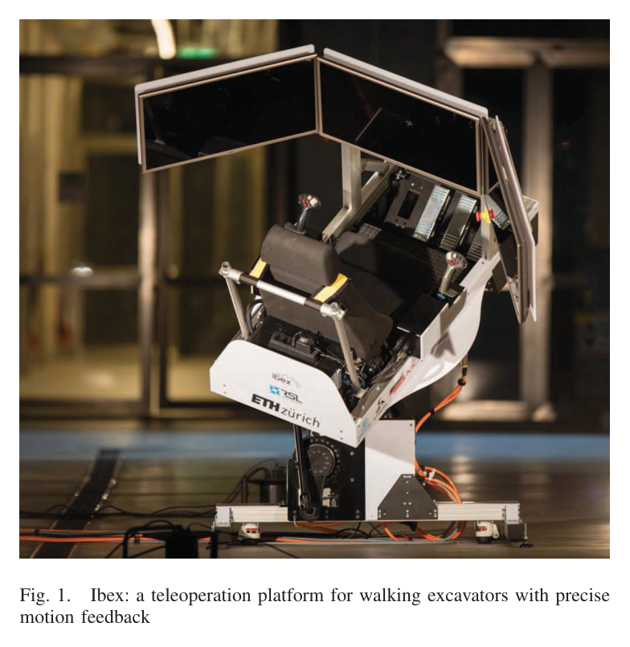
원문 Figure 1 · PDF p.1 — Fig. 1. Ibex: a teleoperation platform for walking excavators with precise motion feedback
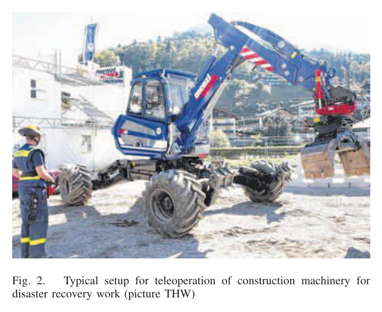
원문 Figure 2 · PDF p.2 — Fig. 2. Typical setup for teleoperation of construction machinery for disaster recovery work (picture THW)
선행 연구의 한계
THW의 보행 굴착기는 feedback이 없어 운전자가 line-of-sight에 서야 했고, 위험 구역과 운전자를 충분히 분리하지 못했다.
Stewart platform은 보행 굴착기가 요구하는 ±45° 자세와 빠른 연속 yaw에 맞지 않고, gimbal·산업용 robot arm은 trailer 배치에 너무 크다.
디지털 영상 압축·전송은 지연이 변동해 motion feedback과 영상의 동기 오차를 만들 수 있다.
이 연구의 기여
두 편심 lever를 차동 구동해 ±45° roll·pitch를 작은 cone-shaped base에서 구현했다.
대형 four-point bearing, external gear, slip ring 조합으로 cockpit의 무한 yaw와 전원·CAN·Ethernet 전달을 동시에 구현했다.
설계 요구치는 M545 숙련 운전자의 극한 기동 IMU 기록에서 도출했다. roll·pitch는 ±45°, 실제 최대 각속도 ±60°/s, 각가속도 ±30°/s²였고 yaw는 각도 제한 없이 ±60°/s였다. IBEX는 선형 가속을 생략하는 대신 이 회전 범위를 넘는 속도·가속도를 목표로 하며, 사람을 태우는 장치이므로 기구 하중·진동·전기·비상정지를 함께 설계했다.
제어는 yaw motor angle을 cabin yaw에 직접 대응시키고, roll φ와 pitch θ는 두 lever의 각도 α_i로 해석하는 inverse kinematics다. 운영 모드에 따라 실제 굴착기의 자세·카메라·조이스틱 신호 또는 Vortex simulator의 가상 상태를 같은 ROS interface로 연결한다. 영상은 변동 지연을 피하기 위해 analog 5.8 GHz, 명령과 자세는 XBee-PRO 868 digital link로 분리한다.
처리 파이프라인
1
실기 요구 계측
전문 운전자가 M545로 극한 기동할 때 onboard IMU로 차체 운동을 기록한다. 수평 운동은 지각·자동차 가속에 비해 작다고 판단하고, roll·pitch·yaw의 각도와 각속도 재현 범위를 설계 입력으로 삼는다.
2
차동 roll·pitch 기구
cone-shaped aluminum base 안의 대칭 eccentric lever 두 개를 MOOG G3-V6 motor와 Wittenstein TPK+50 gearbox로 구동한다. 두 lever의 조합이 roll과 pitch를 만들고, universal/pivot joint가 cockpit 하중을 지지한다.
3
연속 yaw와 slip-ring
Schaeffler VSA200414-N-RL0 four-point bearing의 external tooth를 Wittenstein TPM+ dynamic 025 motor로 구동한다. SRA-73798과 SC104 slip-ring을 통해 CAN·Ethernet·전원·emergency signal을 고정 base와 회전 cockpit 사이에 전달한다.
4
운전자 feedback
U자형 3개 화면 중 바깥 두 개를 접을 수 있게 하고, 실제 굴착기 joystick의 hydraulic pilot 대신 Logitech sensor base와 조정된 return spring을 쓴다. pedal과 joystick 위치는 운전자 체격에 맞게 이동한다.
5
통신·훈련 운영
100 Hz command는 868 MHz XBee, 3개 영상은 5.8 GHz analog link로 보내고, Vortex의 M545·deformable earth work를 같은 ROS 제어에 연결한다.
기하 제약을 풀어 roll φ와 pitch θ에 대응하는 한쪽 lever angle α_1을 구하며, 반대쪽도 같은 방식으로 계산한다.
구동계 관성비
\lambda=\frac{J_{load}}{J_{motor}}
gear compliance로 인한 사람 탑승 플랫폼의 two-mass oscillation을 피하기 위해 최대 10:1을 설계 기준으로 사용했다.
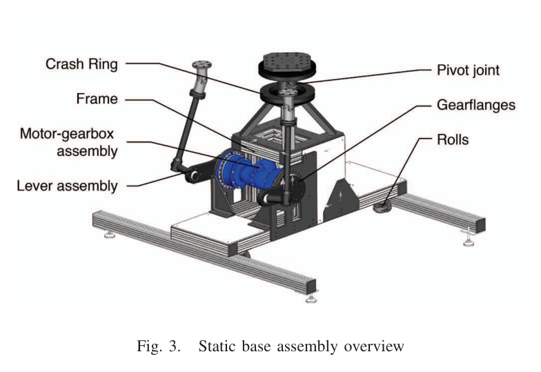
원문 Figure 3 · PDF p.3 — Fig. 3. Static base assembly overview
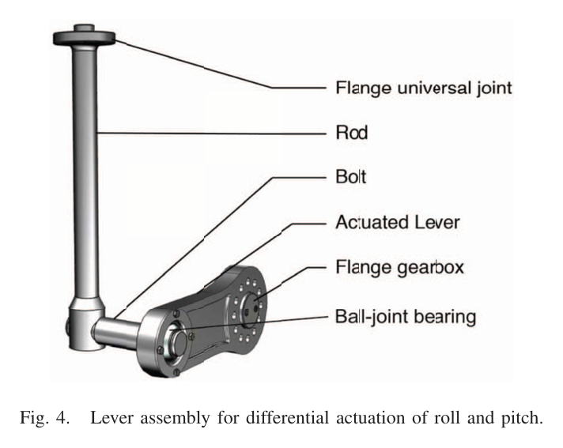
원문 Figure 4 · PDF p.3 — Fig. 4. Lever assembly for differential actuation of roll and pitch.
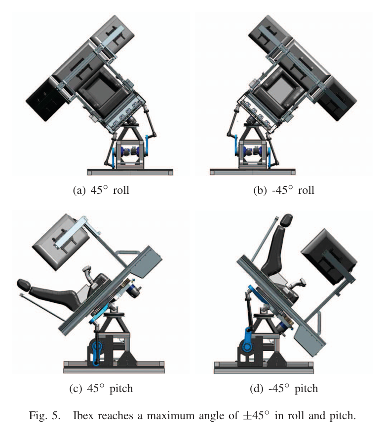
원문 Figure 5 · PDF p.3 — Fig. 5. Ibex reaches a maximum angle of ±45◦in roll and pitch.
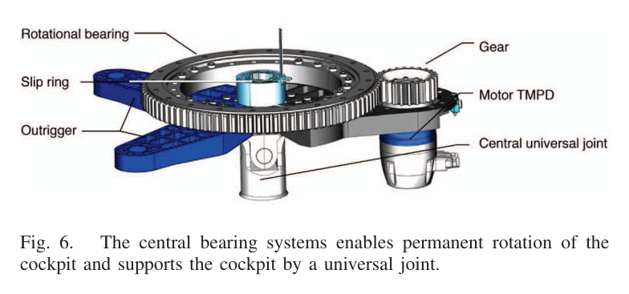
원문 Figure 6 · PDF p.4 — Fig. 6. The central bearing systems enables permanent rotation of the cockpit and supports the cockpit by a universal joint.
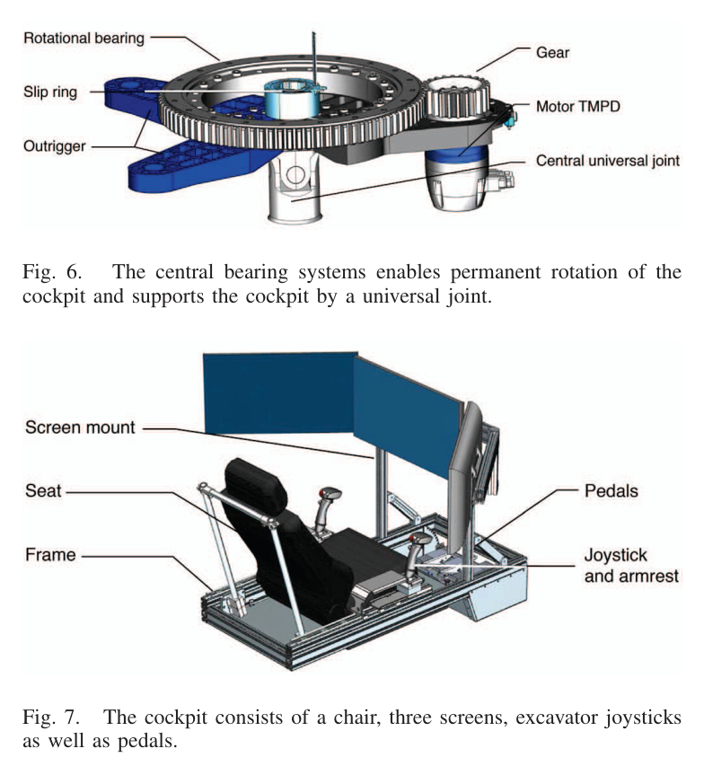
원문 Figure 7 · PDF p.4 — Fig. 7. The cockpit consists of a chair, three screens, excavator joysticks as well as pedals.
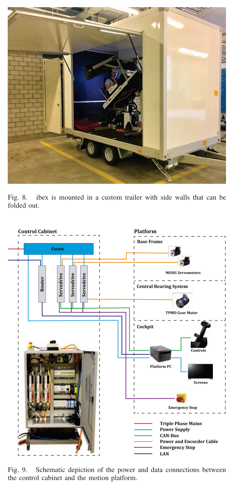
원문 Figure 9 · PDF p.4 — Fig. 9. Schematic depiction of the power and data connections between the control cabinet and the motion platform.
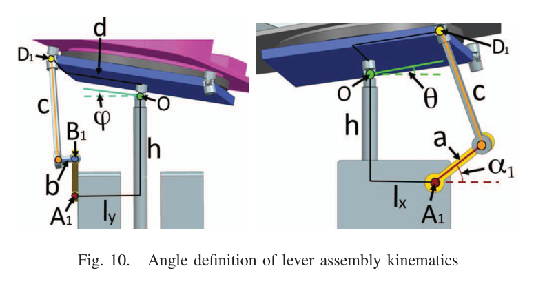
원문 Figure 10 · PDF p.5 — Fig. 10. Angle definition of lever assembly kinematics
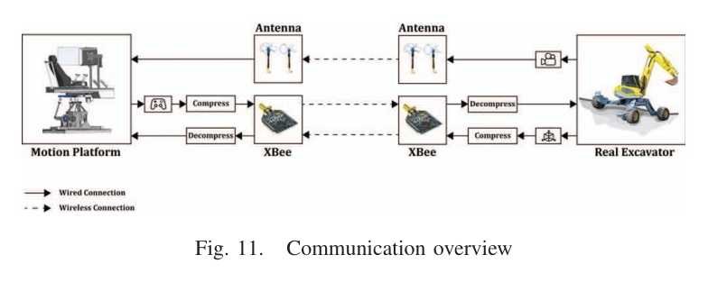
원문 Figure 11 · PDF p.5 — Fig. 11. Communication overview
3.핵심 기술
작은 설치면적에서 큰 자세를 내는 차동 lever
두 대칭 lever를 독립 구동하면 공통 성분과 차동 성분으로 pitch와 roll을 만든다. 상·하 singularity를 의도적으로 극한 위치로 써 공간을 줄였고, universal joint가 큰 cockpit 운동을 허용한다. NX motion simulation에서 평균 체격 dummy와 실측 기동을 재생해 최대 actuator torque 240 Nm를 얻고 safety factor 2.5를 적용해 600 Nm를 요구치로 정했다.
roll·pitch 각도 ±45°
IBEX 각속도 ±87°/s와 각가속도 ±57°/s²
TPK+50 overall gear reduction 462:1
MOOG G3-V6는 관성비 10:1 조건을 만족하는 최소 series motor
연속 회전 cockpit와 사람 중심 interface
yaw는 real excavator처럼 무한 회전해야 하므로 Stewart 구조 대신 외치형 four-point bearing과 직접 motor drive를 쓴다. cockpit의 PC, 3개 화면, joystick, pedal이 함께 회전하고 slip-ring이 data와 power를 전달한다. 접이식 화면과 trailer의 접이식 side wall은 운용 때 motion envelope를 확보하면서 운송 때 일반 문과 작은 trailer에 맞추는 설계다.
IBEX yaw 최대 각속도 ±95°/s
총 플랫폼 질량 450 kg
4-point safety belt와 adjustable controls
전기 cabinet은 EN 61439-1 외부 인증
지연 특성이 다른 신호의 통신 분리
제어 명령은 압축 가능한 저대역 digital link, 영상은 동기 변동이 적은 analog link에 배정한다. 목표 원격 거리는 최소 500 m이고 플랫폼-굴착기 제어 지연은 500 ms 미만이어야 한다. 논문은 특히 영상과 motion feedback의 상대 지연이 5 ms를 넘으면 motion sickness가 생길 수 있다고 보고, 절대 대역폭보다 일정한 동기를 우선했다.
XBee-PRO 868: outdoor 최대 40 km, 24 kbps
굴착기 100 Hz control의 요구량 14.4 kbps
3개 Immersion RC 25 mW transmitter, 5.8 GHz
8 channels, channel width 37 MHz
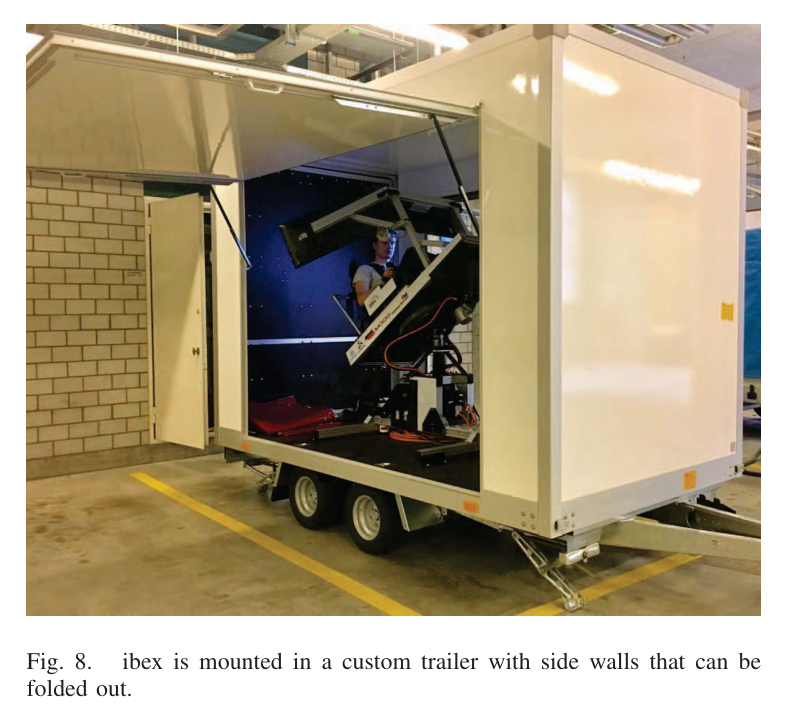
원문 Figure 8 · PDF p.4 — Fig. 8. ibex is mounted in a custom trailer with side walls that can be folded out.
4.실험 결과
실험 환경·장비·데이터
Menzi Muck M545 보행 굴착기의 숙련 운전자 극한 기동을 onboard IMU로 계측해 플랫폼 요구치를 만들었다.
450 kg 3DOF IBEX에 MOOG G3-V6 roll/pitch motors, Wittenstein gearbox, continuous-yaw bearing, 3개 foldable screens, excavator-style joysticks와 pedals를 통합했다.
CM Labs Vortex에서 M545와 deformable-soil earth work를 모델링하고, 숙련자와 비숙련자가 동일 cockpit에서 여러 scenario를 시험했다.
실기 원격 통신 architecture는 XBee-PRO 868 command link와 3-channel 5.8 GHz analog video, patch·cloverleaf diversity receiver로 설계했다.
실험 프로토콜
실측 M545의 최대 roll/pitch/yaw 각도·각속도·각가속도와 IBEX가 달성한 기구 사양을 Table I에서 대조했다.
Vortex 훈련 scenario를 숙련·비숙련 운전자에게 제공하고 motion·visual feedback의 동작과 초기 사용자 반응을 확인했다.
real excavator와의 장거리 teleoperation 성능, 작업시간, error rate, 지연 분포를 측정하는 정식 protocol은 이 논문에서 완료되지 않았다.
비교 기준
Menzi Muck M545 실측 회전 사양
상용 Stewart·gimbal·industrial robot arm 구조에 대한 요구조건 비교
사용자 작업 성능의 정량 baseline은 원문에서 보고되지 않음
평가 지표
최대 자세각
최대 각속도
최대 각가속도
actuator torque와 safety factor
통신 거리·대역폭·지연 요구
숙련·비숙련 사용자의 초기 정성 feedback
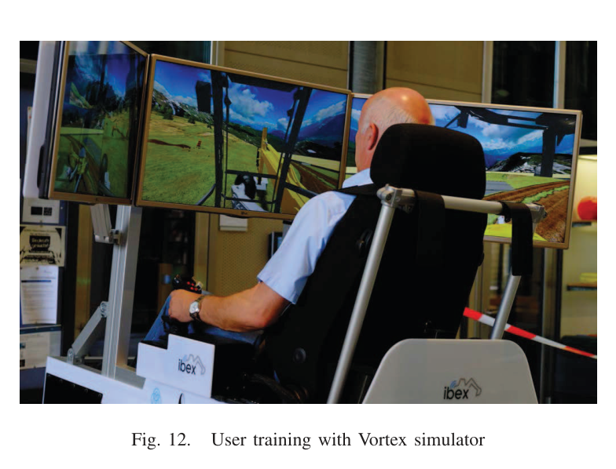
원문 Figure 12 · PDF p.6 — Fig. 12. User training with Vortex simulator
핵심 결과 해석
IBEX는 M545와 동일한 roll·pitch ±45° 및 무한 yaw 범위를 재현했다. 속도 여유도 확보해 roll·pitch 최대 각속도는 실기 ±60°/s보다 큰 ±87°/s, yaw는 ±95°/s, roll·pitch 각가속도는 실기 ±30°/s²보다 큰 ±57°/s²를 달성했다. 즉 숙련자 계측에서 도출한 회전 motion envelope를 플랫폼이 충족하거나 넘었다.
숙련·비숙련 운전자가 Vortex simulator와 3DOF 플랫폼을 성공적으로 사용했고 초기 feedback은 일관되게 긍정적이었다. 하지만 참가자 수, task completion time, collision, workload, sickness score 같은 통계는 보고되지 않았다. 결과는 기구 사양 충족과 feasibility demonstration으로는 유효하지만, 3D situational awareness가 실제 작업 성능을 얼마나 높이는지는 아직 입증하지 못했다.
정량 결과
평가 항목
정량 결과
조건·맥락
원문 근거
roll/pitch 최대 자세각
M545 ±45° / IBEX ±45°
실기 motion envelope를 동일하게 재현
PDF p.2
roll/pitch 최대 각속도
M545 ±60°/s / IBEX ±87°/s
플랫폼 속도 여유 확보
PDF p.2
roll/pitch 최대 각가속도
M545 ±30°/s² / IBEX ±57°/s²
Table I 사양 비교
PDF p.2
yaw 최대 각속도
M545 ±60°/s / IBEX ±95°/s
각도 범위는 둘 다 무한
PDF p.2
roll/pitch 구동 토크 설계
simulation 최대 240 Nm, safety factor 2.5 적용 요구 600 Nm
평균 체격 dummy와 실측 극한 기동을 NX에서 재생
PDF p.3
제어 통신량
100 Hz에서 14.4 kbps
XBee-PRO 868 가용 24 kbps 이내
PDF p.5
실패 사례와 경계조건
3개 화면만으로 충분한 3D situational awareness를 제공하는 것이 simulation과 teleoperation 모두의 핵심 난제로 남았다.
실제 excavator 원격 시험이 완료되지 않아 장거리 radio shadow, packet loss, 지연 변동에 대한 복구 동작이 검증되지 않았다.
linear acceleration을 생략했으므로 급정지·충격·주행 가속의 촉각 단서는 재현하지 않는다.
사용자 평가가 정성적이라 숙련도별 학습효과와 motion sickness를 수치로 판단할 수 없다.
5.한계 및 향후 연구
현재 한계
실제 M545와 결합한 teleoperation field trial이 논문 시점에는 예정 단계여서 원격 작업 성능을 입증하지 않았다.
숙련·비숙련 사용자를 시험했지만 표본 수와 completion time·error·NASA-TLX·sickness 같은 지표가 없다.
3면 화면은 가려진 다리와 bucket contact의 깊이 정보를 충분히 전달하지 못해 3D situational awareness가 남은 난제다.
향후 연구
실제 walking excavator와 결합해 camera·audio stream을 포함한 원격 작업을 반복 평가한다.
깊이·후방·다리 접지·bucket contact를 시각화해 3D situational awareness를 높인다.
force·hydraulic pressure·audio를 지연 정렬하고 packet loss 때 predictive display나 안전 정지로 전환한다.
6.한마디로 정리
핵심 방법은?
M545 기동 계측에서 회전 요구를 정하고, 차동 lever roll·pitch와 연속 bearing yaw, 3면 영상·실제형 조작계·Vortex를 450 kg trailer 플랫폼에 통합했다.
핵심 결과는?
±45° 자세와 실기보다 큰 각속도·각가속도를 달성하고 숙련·비숙련자가 simulator를 성공적으로 사용했다.
한계는?
실제 굴착기 원격 작업과 사용자 성능·지연 통계가 없어 재난 현장 효과와 3D 상황인지 개선 정도는 아직 정량 확인되지 않았다.
#안전·HRI#시스템통합·현장실증#3자유도 모션 플랫폼#3면 영상#굴착기 조이스틱 연동
나의 의견 / 우리 연구와의 연관성
IBEX는 자율굴착이 완전 자동화되지 않은 단계에서 사람이 안전 구역에서 supervisory control과 예외 복구를 수행하는 실용적 다리다. 특히 보행 굴착기의 차체 자세를 운전자에게 돌려주는 설계는 화면만으로는 접지와 전복 위험을 판단하기 어렵다는 현장 HRI 문제를 직접 다룬다.
자율 planner가 이동·굴착 primitive를 실행하고 IBEX 운전자가 불확실한 접촉에서만 개입하면, 예측 display와 motion cue로 통신 지연과 상태 confidence를 전달할 수 있다.
유압 압력·bucket force·track or leg contact를 좌석 motion과 화면 overlay로 동기화하면 가림 속 작업 접촉을 복원할 수 있다.
자율 planner의 predicted trajectory를 Vortex digital twin에 선행 재생해 500 ms급 지연에서도 운전자가 미래 상태를 볼 수 있다.
비상시 autonomous safe-pose와 emergency stop을 연동해 radio loss 때 장비를 안정 상태로 전환해야 한다.
7.전체 그림·표
본문 핵심 위치에 배치하지 않은 원문 Figure와 Table을 원문 페이지 순서로 수록한다.